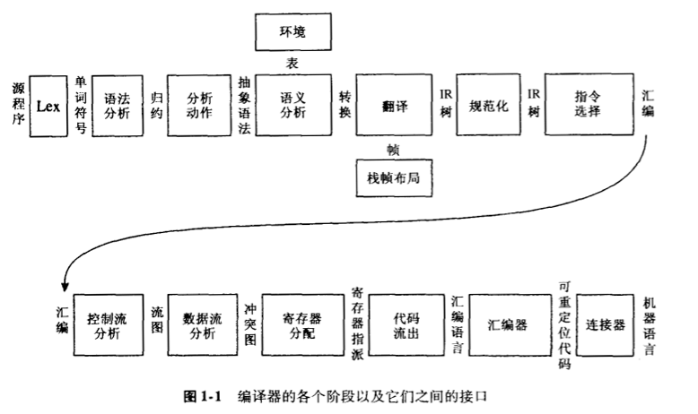
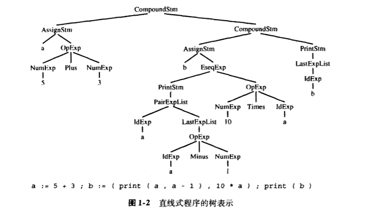

程序设计语言转换成可执行代码时使用的技术、数据结构和算法。

|阶段|描述|
|:-:|:-:|
|词法分析|将源文件分解为一个个独立的单词符号|
|语法分析|分析程序的短语结构|
|语义动作|建立每个短语对应的抽象语法树|
|语义分析|确定每个短语的含义，建立变量和其声明的关系，检查表达式的类型，翻译每个短语|
|栈桢布局|按照机器要求的方式将变量、函数参数等分配于活跃记录内（即栈桢）|
|翻译|生成中间表示树，IR Tree，这是一种与任何特定程序设计语言和目标机体系结构无关的表示|
|规范化|提取表达式中的副作用，整理条件分支，以方便下一阶段处理|
|指令选择|将 IR 树结点组合成与目标机指令相应的块|
|控制流分析|分析指令的顺序并建立控制流图，此图表示程序执行时可能流经的所有控制流|
|数据流分析|收集程序变量的数据流分析，如活跃分析计算每个变量仍需使用其值的地点即活跃点|
|寄存器分配|为程序中的每一个变量和临时数据选择一个寄存器，不在同一点活跃的两个变量可以共享同一个寄存器|
|代码流出|用机器寄存器替代每一条指令中出现的临时变量名|
编译器分解成多个阶段是为了能复用其各个构件。抽象语法 Abstract Syntax、IR 树 IR Tree和汇编 Assem之类的接口是数据结构的形式。翻译接口是一组可由语义分析阶段调用的函数，单词符号 Token接口是函数形式，分析器通过调用它而得到输入程序中的下一个单词符号。
树语言的数据机构
编译器中使用的许多重要数据结构在编译程序中都有中间表示，通常采用树的形式，树的节点有若干类型，对应含有不同的属性。
举例：直线型程序语言的树表示
| Stm → Stm ; Stm (CompoundStm) | ExpList → Exp, ExpList (PairExpList) |
| Stm → id:= Exp (AssignStm) | ExpList → Exp (LastExpList) |
| Stm → print( ExpList ) (PrintStm) | Binop → + (Plus) |
| Exp → id (IdExp) | Binop → - (Minus) |
| Exp → num (NumExp) | Binop → x (Times) |
| Exp → Exp Binop Exp (OpExp) | Binop → / (Division) |
| Exp → ( Stm, Exp ) (EseqExp) |
- 标识符表达式，表示变量的当前内容。
- 数，按命名它的整数计值。
- 操作符表达式 e1 op e2**，表示先计算e1，再计算e2**，然后按给定的二元操作符计算表达式结果
- 表达式序列 (s,e)**，类似与 C 语言中的逗号操作符，在计算表达式e（并返回其结果）之前先计算语句s**的副作用。
程序：
a := 5 + 3; b := (print(a, a-1), 10*a); print(b)
运行结果：
8 7
80

用下面提供的原型来书写上树时，可得到程序
A_stm program =
A_CompoundStm(
A_AssignStm("a", A_OpExp(A_NumExp(5), A_plus, A_NumExp(3))),
A_CompoundStm(
A_AssignStm("b", A_EseqExp(A_PrintStm(A_PairExpList(A_IdExp("a"), A_LastExpList(A_OpExp(A_IdExp("a"), A_minus, A_NumExp(1))))), A_OpExp(A_NumExp(10), A_times, A_IdExp("a")))),
),
A_PrintStm(A_LastExpList(A_IdExp("b")))
);# 每个文法符号对应于一种typedef的数据结构，在这里给出每种文法规则的构造函数原型。
typedef char *string;
typedef struct A_stm_ *A_stm;
typedef struct A_exp_ *A_exp;
typedef struct A_expList_ *A_expList;
typedef enum { A_plus, A_minus, A_times, A_div } A_binop;
struct A_stm_ { enum {A_compoundStm, A_assignStm, A_printStm } kind;
union { struct { A_stm stm1, stm2; } compound;
struct { string id; A_exp exp; } assign;
struct { A_expList exps; } print;
} u;
};
A_stm A_CompoundStm(A_stm stm1, A_stm stm2);
A_stm A_AssignStm(string id, A_exp exp);
A_stm A_PrintStm(A_expList exps);
struct A_exp_ { enum { A_idExp, A_numExp, A_opExp, A_eseqExp } kind;
union { string id;
int num;
struct { A_exp left; A_binop oper; A_exp right; } op;
struct { A_stm stm; A_exp exp; } eseq;
} u;
};
A_exp A_IdExp(string id);
A_exp A_NumExp(int num);
A_exp A_OpExp(A_exp left, A_binop oper, A_exp right);
A_exp A_EseqExp(A_stm stm, A_exp exp);
struct A_expList_ { enum { A_pairExpList, A_lastExpList } kind;
union { struct { A_exp head; A_expList tail; } pair;
A_exp last;
} u;
};